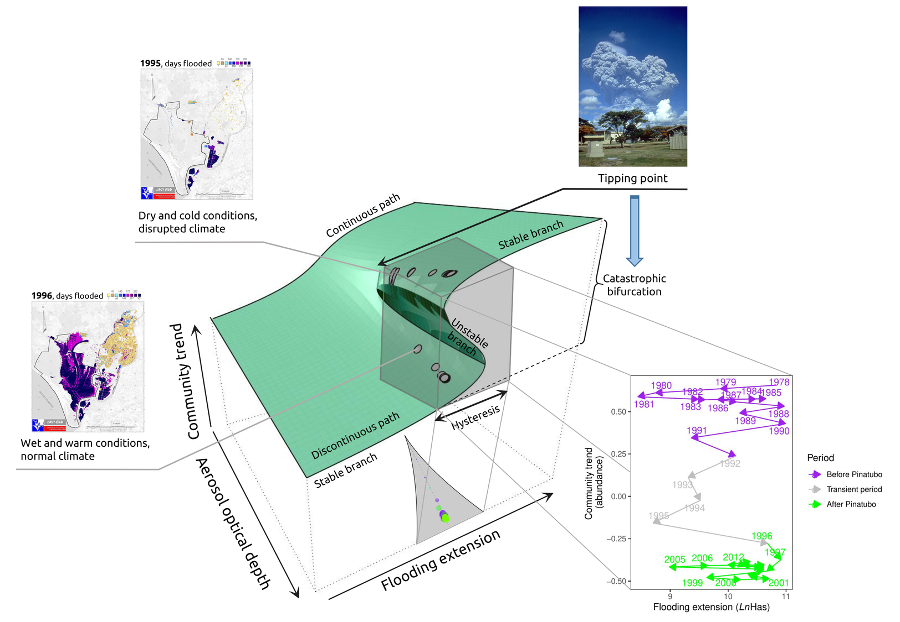

Last updated: 2024-02-08
Checks: 2 0
Knit directory: GuadalShiftR/
This reproducible R Markdown analysis was created with workflowr (version 1.7.1). The Checks tab describes the reproducibility checks that were applied when the results were created. The Past versions tab lists the development history.
Great! Since the R Markdown file has been committed to the Git repository, you know the exact version of the code that produced these results.
Great! You are using Git for version control. Tracking code development and connecting the code version to the results is critical for reproducibility.
The results in this page were generated with repository version 83cf2e4. See the Past versions tab to see a history of the changes made to the R Markdown and HTML files.
Note that you need to be careful to ensure that all relevant files for
the analysis have been committed to Git prior to generating the results
(you can use wflow_publish or
wflow_git_commit). workflowr only checks the R Markdown
file, but you know if there are other scripts or data files that it
depends on. Below is the status of the Git repository when the results
were generated:
Ignored files:
Ignored: .Rhistory
Ignored: .Rproj.user/
Ignored: README.html
Ignored: output/SSRDLVR_model/MCMC_checks/
Ignored: pipeline.R
Unstaged changes:
Modified: CITATION
Modified: MAKEFILE.R
Note that any generated files, e.g. HTML, png, CSS, etc., are not included in this status report because it is ok for generated content to have uncommitted changes.
These are the previous versions of the repository in which changes were
made to the R Markdown (analysis/index.Rmd) and HTML
(docs/index.html) files. If you’ve configured a remote Git
repository (see ?wflow_git_remote), click on the hyperlinks
in the table below to view the files as they were in that past version.
| File | Version | Author | Date | Message |
|---|---|---|---|---|
| html | c29b0cf | Pablo Almaraz | 2024-02-07 | Build site. |
| html | febb514 | Pablo Almaraz | 2024-02-07 | Build site. |
| Rmd | 8c0dd76 | Pablo Almaraz | 2024-02-07 | Start my new project |
| html | bd8c1e8 | Pablo Almaraz | 2024-02-07 | Build site. |
| Rmd | 9f99792 | Pablo Almaraz | 2024-02-07 | Start my new project |
| html | 5f474b6 | Pablo Almaraz | 2024-02-07 | Build site. |
| Rmd | 9b90a7b | Pablo Almaraz | 2024-02-07 | Start my new project |
| html | 602ce6d | Pablo Almaraz | 2024-02-07 | Build site. |
| html | 8ed1ed6 | Pablo Almaraz | 2024-02-07 | Build site. |
| html | b6dcf46 | Pablo Almaraz | 2024-02-07 | Build site. |
| Rmd | c4037f1 | Pablo Almaraz | 2024-02-07 | Start my new project |
| Rmd | d08ca1d | Pablo Almaraz | 2024-02-07 | Start workflowr project. |
This is the GuadalShiftR project repository, exploring tipping points, a catastrophic bifurcation and alternative stable states in the Guadalquivir marshes
Ecological modeling has been traditionally dominated by a focus on the asymptotic behavior, but transient dynamics can have a profound effect on species and community persistence. We show a strong non-stationary coupling of ecological drivers in one of the world’s major Mediterranean ecosystems, Doñana wetlands, which is currently threatened by many stressors. Recurrent changes in precipitation fluctuations triggered sudden reorganizations in community trends and population dynamics of a guild of ten wintering waterfowl species during a 36-year period. An anomalously dry and cold transient period in the Northern Hemisphere induced by the volcanic eruption of Mt. Pinatubo in 1991, prompted an abrupt shift to an alternative regime of fluctuating species densities. Most species did not recover previous values even though local weather patterns and large-scale climatic conditions returned to normal values. Although the dynamical stability of the community is similar in both regimes, structural stability declined: the probability of feasibility dropped across time due to depressed population densities at equilibrium. A stochastic cusp catastrophe model fitted to the time series data suggests that the spatio-temporal persistence of cold and dry conditions in the wintering areas, coupled with warm and wet conditions in the breeding grounds, is modulating local ecological conditions and inducing hysteresis through behavioral shifts to alternative wintering sites. Our study provides empirical evidence for the existence of a catastrophic bifurcation triggered by a tipping point in the dynamics of an imperiled terrestrial vertebrate community, highlighting the relevance of history and multi-stability in explaining current patterns in biological conservation.
